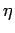
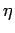

Inhalt Index DeskTop Bronstein

 Funktionen und ihre Darstellung Funktionsbegriff Grenzwert von Funktionen
Funktionen und ihre Darstellung Funktionsbegriff Grenzwert von Funktionen


Die Funktion y=f(x) sei in einer Umgebung von  , eventuell mit Ausnahme von
, eventuell mit Ausnahme von  , definiert. Die Funktion f(x) besitzt an der Stelle x=a den Grenzwert oder Limes A, in Zeichen
, definiert. Die Funktion f(x) besitzt an der Stelle x=a den Grenzwert oder Limes A, in Zeichen
wenn sich die Funktion f(x) bei unbegrenzter Annäherung von x an a unbegrenzt an A nähert. Die Funktion f(x) braucht an der Stelle x=a den Wert A nicht anzunehmen und braucht an dieser Stelle auch nicht definiert zu sein.
Exakte Formulierung: Der Grenzwert (2.14) existiert, wenn sich nach Vorgabe einer beliebig kleinen positiven Zahl  eine zweite positive Zahl  derart finden läßt, daß für alle x mit
eine zweite positive Zahl  derart finden läßt, daß für alle x mit
| (2.15) |
eventuell mit Ausnahme des Punktes 
Wenn a Randpunkt eines zusammenhängenden Gebietes ist, reduziert sich die Ungleichung zu einer der beiden einfachen Ungleichungen oder .